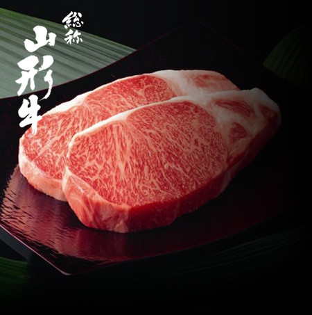
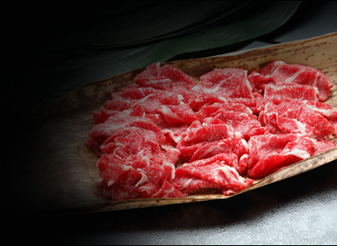

総称山形牛
“味の山形牛”とも言われる最上級のブランド黒毛和牛
冬に脂肪が付き夏に痩せる―、この季節の循環を2回越すことで身が引締まり、サシの入ったきれいな霜降り肉となります。
また、雪国山形の寒暖差が育んだその肉質はキメ細やかで口どけ良く、人の体温で融け出す上質の脂と相まって“極上の風味と舌触り”。
当店では、その山形牛の中から特に上質の“A4・A5ランクの雌牛（処女牛）”を厳選して仕入れています。

①家柄よし
産地、生産者が確かなので安全・安心です。
- 飼料の安全性をはじめ、産地や生産者が確かな山形牛だけに設定しています。
- 個体識別番号以外にも、子牛登記証明書、産地証明書、牛肉安全確認証などがついています。
②育ちよし
良質な肉質を育む自然環境です。
- 昼と夜の寒暖差と、夏と冬の厳しさがキメ細やかな肉目を作ります。
- 絹のような霜降りと口の中でとろける上品な味わいは、その気候風土と愛情の恵みです。